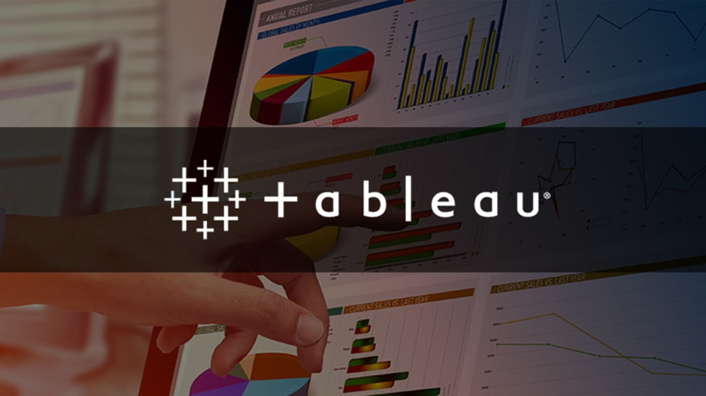
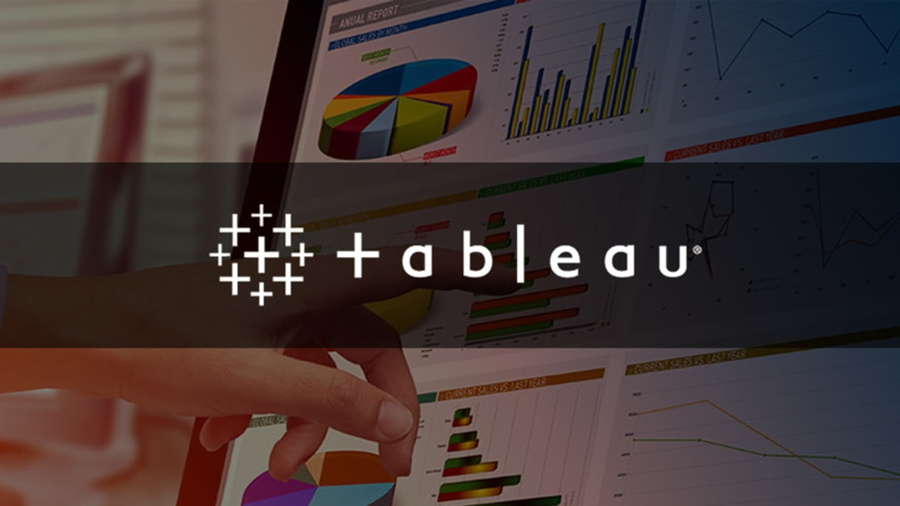

Redox Airlines is a small startup airline facing challenges in financial management and data analysis. The lack of connectivity among their systems makes it difficult to access crucial information easily. Utilizing my expertise in Microsoft Excel, I provided insights and valuable recommendations for strategic planning and financial management. This has enabled Redox Airlines to drive business growth and improve competitiveness within the industry.
 

This link hosts a collection of my Tableau projects, highlighting my proficiency in data visualization and analytics. From Emergency Room Analysis to Customer Churn Analysis, and even my capstone project, each project demonstrates my ability to extract valuable insights and inform decision-making effectively. It serves as a testament to my expertise in Tableau and my commitment to driving organizational success through data-driven strategies.

As a Data Analyst at Education for All, a Charity, I was tasked by the Head of Fundraising to present data on donor insights and donation rates. The project aimed to increase the number of donors, donation frequency, and the value of contributions within the Fundraising team. Utilizing the PostgreSQL database system, I successfully extracted insights from the provided data and gave recommendations that informed the team's strategy and boosted donations.

Nestlé, the world's largest food company, boasts a portfolio of over 8,500 brands and 30,000 products, operating across five continents with a workforce exceeding 200,000. Nestlé R&D Australia specializes in fortified products for Nestlé Nutrition.
In response to the company's expansion goals, the Head of Nestlé's Growth and Strategy Department assigned me the task of creating a product comparison dashboard. Leveraging Microsoft Power BI, I delivered insights into existing product performance, thereby facilitating informed expansion strategies.